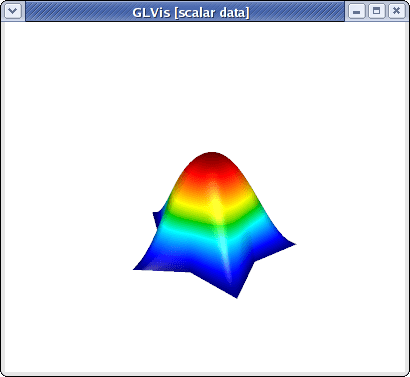
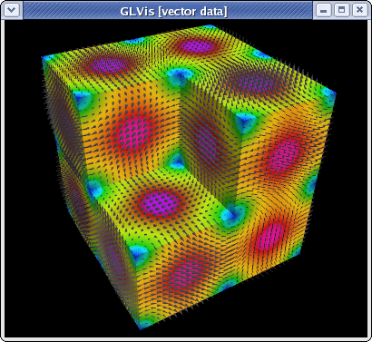
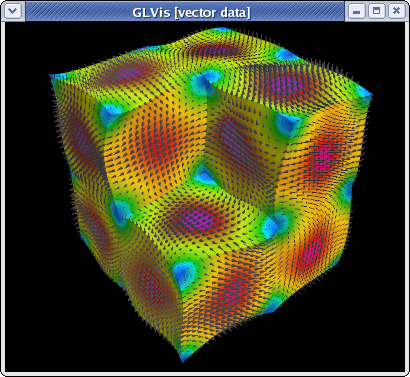

Serial Tutorial
Summary
This tutorial illustrates the building and sample use of the following MFEM serial example codes:
An interactive documentation of all example codes is available here.
Building
Follow the serial instructions to build the MFEM library and to start a GLVis server. The latter is the recommended visualization software for MFEM (though its use is optional).
To build the serial example codes, type make in MFEM's examples directory:
~/mfem/examples> make
g++ -O3 -I.. ex1.cpp -o ex1 -L.. -lmfem
g++ -O3 -I.. ex2.cpp -o ex2 -L.. -lmfem
g++ -O3 -I.. ex3.cpp -o ex3 -L.. -lmfem
g++ -O3 -I.. ex4.cpp -o ex4 -L.. -lmfem
g++ -O3 -I.. ex5.cpp -o ex5 -L.. -lmfem
g++ -O3 -I.. ex6.cpp -o ex6 -L.. -lmfem
g++ -O3 -I.. ex7.cpp -o ex7 -L.. -lmfem
g++ -O3 -I.. ex8.cpp -o ex8 -L.. -lmfem
g++ -O3 -I.. ex9.cpp -o ex9 -L.. -lmfem
g++ -O3 -I.. ex10.cpp -o ex10 -L.. -lmfem
Example 1
This example code demonstrates the use of MFEM to define a simple linear finite element discretization of the Laplace problem $-\Delta u = 1$ with homogeneous Dirichlet boundary conditions. To run it, simply specify the input mesh file (which will be refined to a final mesh with no more than 50,000 elements):
~/mfem/examples> ex1 -m ../data/star.mesh
Iteration : 0 (B r, r) = 0.00111712
Iteration : 1 (B r, r) = 0.00674088
Iteration : 2 (B r, r) = 0.0123008
...
Iteration : 88 (B r, r) = 5.28955e-15
Iteration : 89 (B r, r) = 1.99155e-15
Iteration : 90 (B r, r) = 9.91309e-16
Average reduction factor = 0.857127
If a GLVis server is running, the computed finite element solution will appear in an interactive window:

You can examine the solution using the mouse and the GLVis command keystrokes.
Pressing "RAfjlmm", for example, will give us a 2D view without light or perspective showing the computed level lines:
This example saves two files called refined.mesh and sol.gf, which represent the refined mesh and the computed solution as a grid function. These can be visualized with glvis -m refined.mesh -g sol.gf as discussed here.
Example 1 can be run on any mesh that is supported by MFEM, including 3D, curvilinear and VTK meshes, e.g.,
~/mfem/examples> ex1 -m ../data/fichera-q2.vtk
Iteration : 0 (B r, r) = 0.0235996
Iteration : 1 (B r, r) = 0.0476694
Iteration : 2 (B r, r) = 0.0200109
...
Iteration : 27 (B r, r) = 7.77888e-14
Iteration : 28 (B r, r) = 2.36255e-14
Iteration : 29 (B r, r) = 8.56679e-15
Average reduction factor = 0.610261
The picture above shows the solution with level lines plotted in normal direction of a cutting plane, and was produced by typing "AaafmIMMooo" followed by cutting plane adjustments with "z", "y" and "w".
Example 2
This example code solves a simple linear elasticity problem describing a multi-material Cantilever beam. Note that the input mesh should have at least two materials and two boundary attributes as shown below:
+----------+----------+
boundary --->| material | material |<--- boundary
attribute 1 | 1 | 2 | attribute 2
(fixed) +----------+----------+ (pull down)
The example demonstrates the use of (high-order) vector finite element spaces by supporting several different discretization options:
~/mfem/examples> ex2 -m ../data/beam-quad.mesh -o 2
Assembling: r.h.s. ... matrix ... done.
Iteration : 0 (B r, r) = 1.88755e-06
Iteration : 1 (B r, r) = 8.2357e-07
Iteration : 2 (B r, r) = 9.9098e-07
...
Iteration : 498 (B r, r) = 2.78279e-11
Iteration : 499 (B r, r) = 3.75298e-11
Iteration : 500 (B r, r) = 4.95682e-11
PCG: No convergence!
(B r_0, r_0) = 1.88755e-06
(B r_N, r_N) = 4.95682e-11
Number of PCG iterations: 500
Average reduction factor = 0.989508
The output shows the (curved) displaced mesh together with the inverse displacement vector field:
The above plot can be alternatively produced with:
glvis -m displaced.mesh -g sol.gf -k "RfjliiiiimmAbb"
Example 2 also works in 3D:
~/mfem/examples> ex2 -m ../data/beam-tet.mesh -o 3
Assembling: r.h.s. ... matrix ... done.
Iteration : 0 (B r, r) = 2.7147e-06
Iteration : 1 (B r, r) = 1.95756e-06
Iteration : 2 (B r, r) = 2.24159e-06
...
Iteration : 426 (B r, r) = 3.37563e-14
Iteration : 427 (B r, r) = 3.06198e-14
Iteration : 428 (B r, r) = 2.5706e-14
Average reduction factor = 0.978648
One can visualize the vector field, e.g., by pressing "dbAfmeoooovvaa" followed by scale and position adjustments with the mouse:
Example 3
This example code solves a simple 3D electromagnetic diffusion problem corresponding to the second order definite Maxwell equation ${\rm curl\, curl}\, E + E = f$ discretized with the lowest order Nedelec finite elements. It computes the approximation error with a know exact solution, and requires a 3D input mesh:
~/mfem/examples> ex3 -m ../data/fichera.mesh
Iteration : 0 (B r, r) = 121.209
Iteration : 1 (B r, r) = 21.1137
Iteration : 2 (B r, r) = 12.6503
...
Iteration : 149 (B r, r) = 2.40571e-10
Iteration : 150 (B r, r) = 1.39788e-10
Iteration : 151 (B r, r) = 9.43635e-11
Average reduction factor = 0.911811
|| E_h - E ||_{L^2} = 0.00976655
To visualize the magnitude of the solution with the proportionally-sized vector field shown only on the boundary of the domain, type "Vfooogt" in the GLVis window (or run glvis -m refined.mesh -g sol.gf -k "Vfooogt"):

Curved meshes are also supported:
~/mfem/examples> ex3 -m ../data/fichera-q3.mesh
Iteration : 0 (B r, r) = 135.613
Iteration : 1 (B r, r) = 22.3785
Iteration : 2 (B r, r) = 12.5215
...
Iteration : 168 (B r, r) = 4.95911e-10
Iteration : 169 (B r, r) = 2.23499e-10
Iteration : 170 (B r, r) = 1.25714e-10
Average reduction factor = 0.921741
|| E_h - E ||_{L^2} = 0.0821686

To visualize the entire vector field, type "fooogtevv" instead, which will use uniform sized arrows colored according to their magnitude. Here is the corresponding plot from "ex3 -m ../data/beam-hex.mesh":
Since entire vector fields in 3D might be difficult to see, a good alternative might be to plot the separate components of the field as scalar functions. For example:
~/mfem/examples> ex3 -m ../data/escher.mesh
Iteration : 0 (B r, r) = 348.797
Iteration : 1 (B r, r) = 32.0699
Iteration : 2 (B r, r) = 14.902
...
Iteration : 159 (B r, r) = 4.16076e-10
Iteration : 160 (B r, r) = 3.50907e-10
Iteration : 161 (B r, r) = 3.22923e-10
Average reduction factor = 0.917548
|| E_h - E ||_{L^2} = 0.36541
~/mfem/examples> glvis -m refined.mesh -g sol.gf -gc 0 -k "gooottF"
The discontinuity of the Nedelec functions is clearly seen in the above plot.